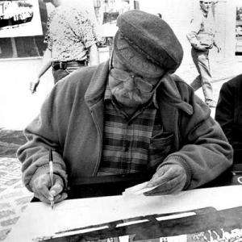
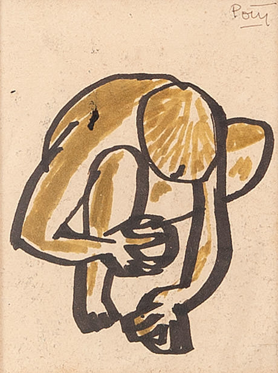

A história e o legado dos grandes nomes da arte paranaense.
A arte produzida no Paraná carrega uma riqueza única, refletindo nossas paisagens exuberantes, as cores da nossa terra e a própria essência do nosso povo. De pinturas clássicas que retratam as serras e os pinheirais a imponentes murais urbanos gravados no concreto, grandes mentes criativas transformaram a história local em obras de valor universal. Este site nasceu exatamente para celebrar e preservar a memória dos Mestres das Artes Visuais do Paraná,convidando você a explorar a trajetória inesquecível de ícones como Alfredo Andersen, Poty Lazzarotto, Efigênia Rolim e Lange de Morretes, descobrindo como cada um deles ajudou a desenhar a identidade cultural e a alma do nosso estado..

Vozes e Traços: O Legado do Paraná
Além de enriquecer o acervo cultural do nosso estado, esses artistas deixaram uma marca profunda na forma como o Paraná se vê e é visto pelo restante do Brasil. Suas criações extrapolam as telas e os ateliers, integrando-se à arquitetura das praças, à vida cotidiana das cidades e à preservação da nossa memória coletiva. Ao estudar o trabalho desses mestres, percebemos que suas obras funcionam como pontes entre o passado e o futuro, inspirando novas gerações a valorizar a história regional e a cultivar a arte como forma de expressão e transformação social.

Raízes e Cores: A Araucária na Arte Paranaense
A araucária é mais que uma árvore. É símbolo, é memória, é Paraná. Nas cores vibrantes do mosaico e nos traços dos artistas,ela se transforma em arte que ocupa as paredes e praças da nossa cidade. Cada tessera, cada detalhe azul e laranja, conta a história de um povo conectado à sua terra, à sua cultura e à sua identidade. A arte paranaense encontra na araucária a força para florescer, levando para além das telas a imponência da nossa floresta e a beleza do que é nosso..

Curiosidades
Curiosidade 1
escreva uma curiosidade sobre o tema pesquisado.
curiosidades 2
escreva outra informacao interessante.